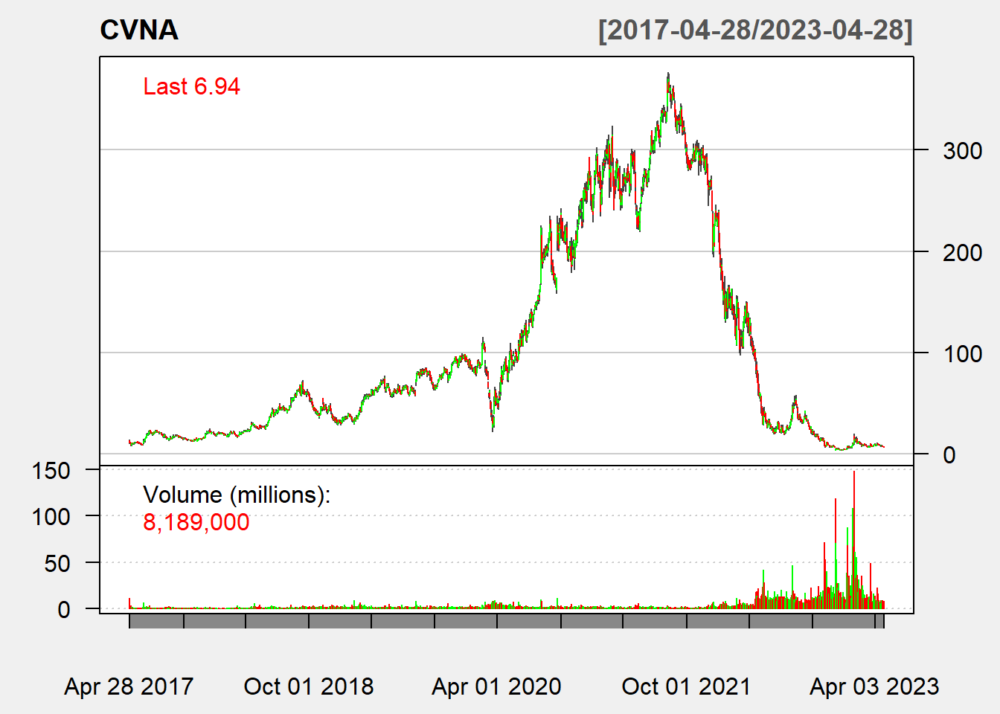
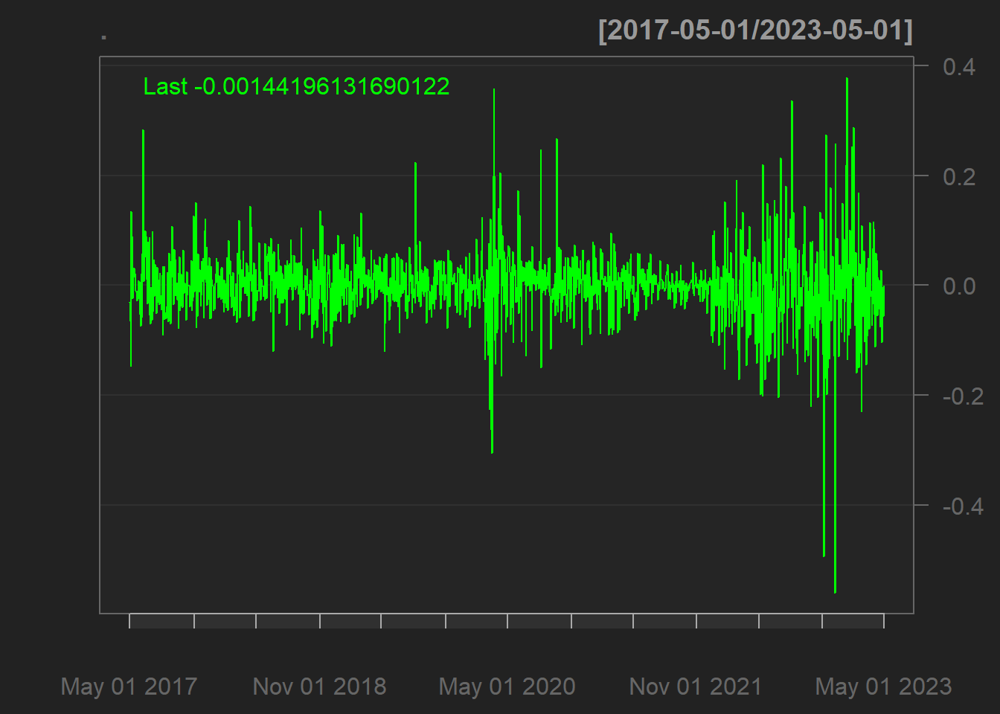
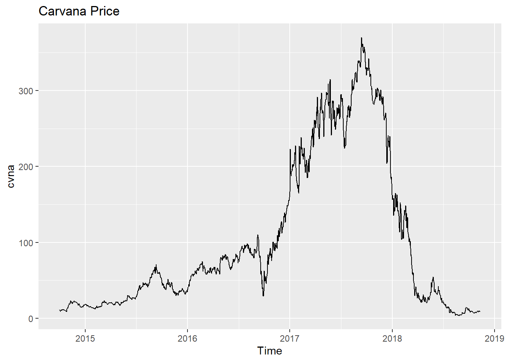
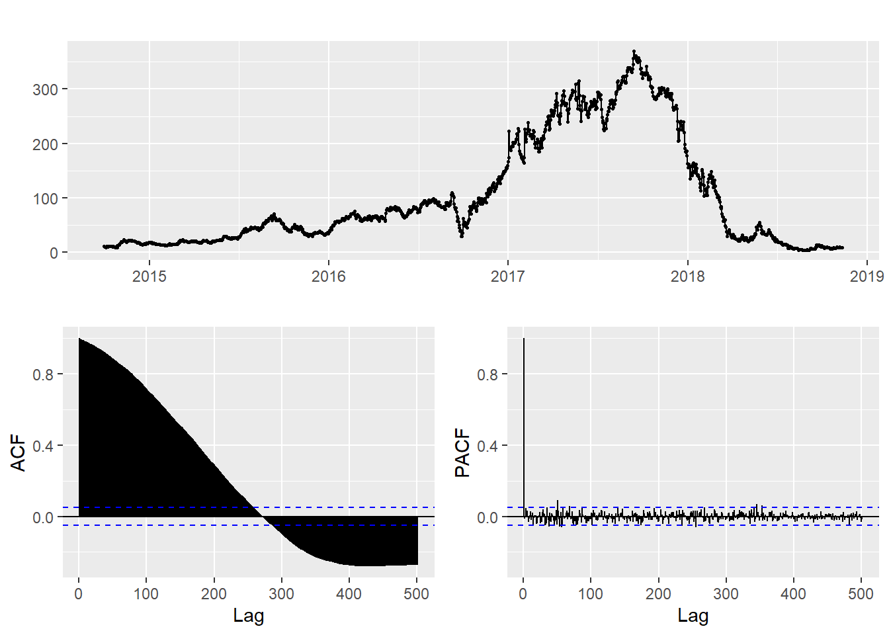
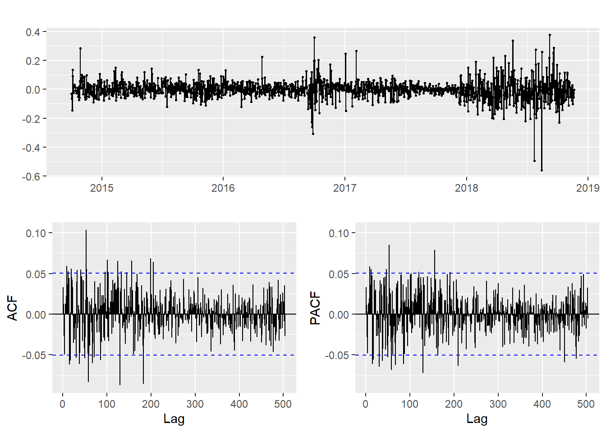
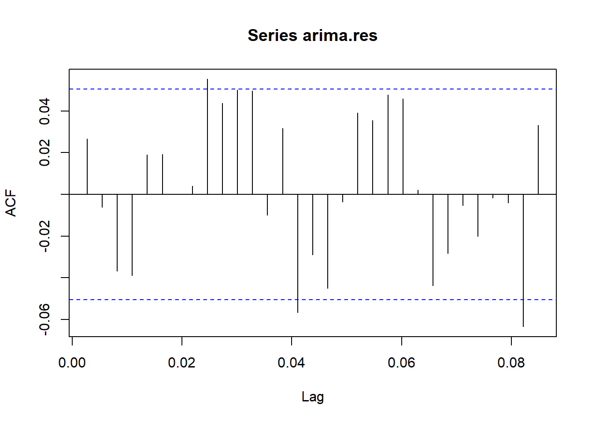
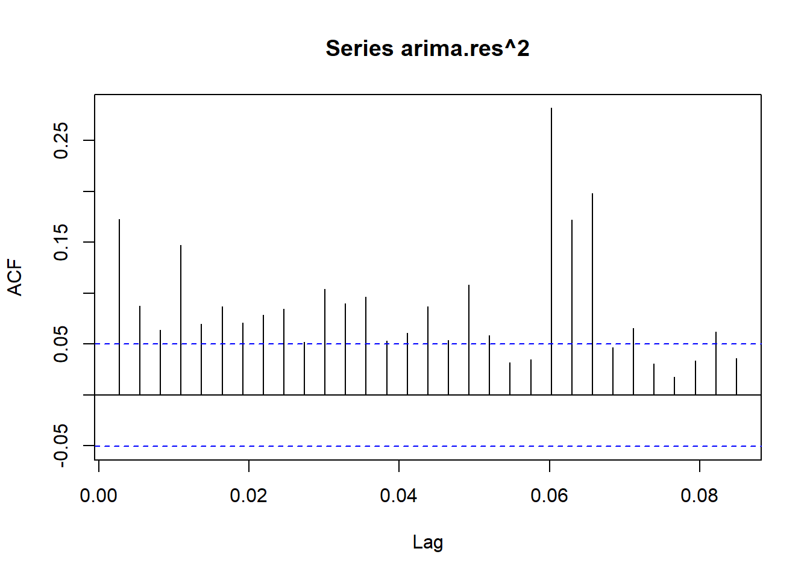
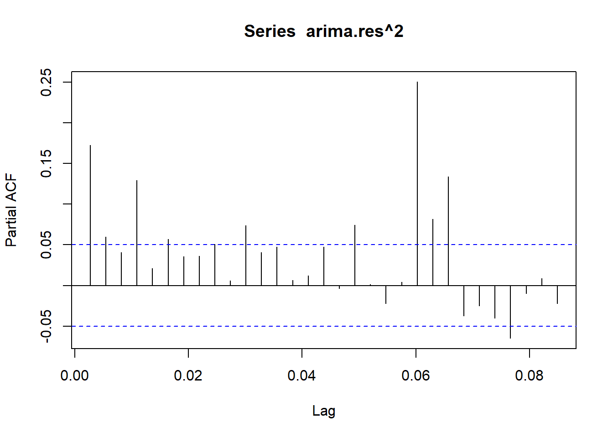
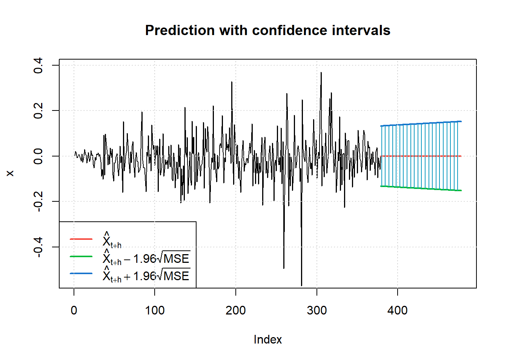
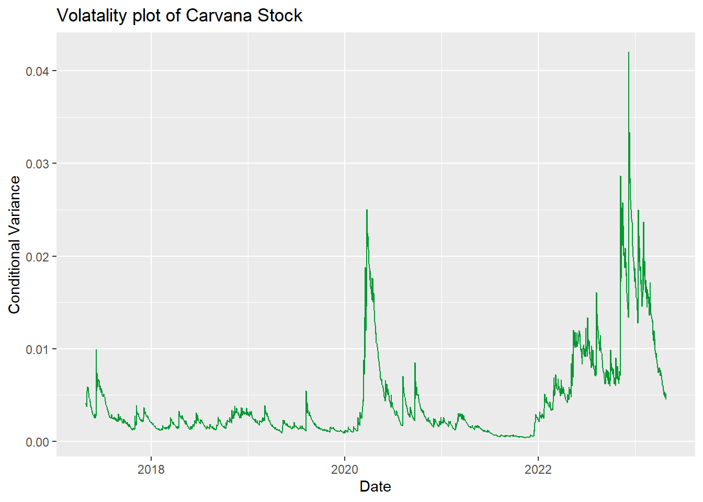

Homework 5
Carvana Model Fitting with ARIMA and GARCH
Since my project has exactly nothing to do with financial time series data (which was not a requirement when choosing projects) I will instead focus on a completely random topic because that’s what the professor told me to do. So fun and worthwhile!
First, let’s get the stock data for our favorite company Carvana! After getting the data, we plot to see what we are working with.
CVNA = getSymbols("CVNA",auto.assign = FALSE, from = "2014-10-01",src="yahoo")
chartSeries(CVNA, theme = chartTheme("white"),
bar.type = "hlc",
up.col = "green",
dn.col = "red")
log(CVNA$`CVNA.Adjusted`) %>% diff() %>% chartSeries()
Based on the data, it would be wise to take the logarithm since the values are highly skewed from when the stock was doing well and when it was doing poorly.
Stationarity
As with most ARCH/GARCH models, we will be modelling the returns rather than the raw data. This is partly why we took the logarithm, so that the returns are on a more reasonable scale from different time periods of the stock.
cvna = ts(CVNA$`CVNA.Adjusted`, start=decimal_date(as.Date("2014-10-01")), frequency = 365.25)autoplot(cvna) +ggtitle("Carvana Price")
cvna %>% ggtsdisplay()
Plotting the raw data, we can see that this series is clearly not stationary. There is extremely high correlation between values as well as string seasonality present in the data. Thus, to address the non-stationarity, we will need to do differencing. In addition to differencing, we will also need to calculate the logarithm of the data to account for large variations in price that occurred over the time frame of interest.
returns = log(cvna) %>% diff()
returns %>% ggtsdisplay()
Based on the ACF plot, we can see that after taking the log and differenc of the data, this series is now weakly stationary. There is no need for additional differencing as the ACF and PACF plots are looking good already. Any extra differencing would result in over-differencing and would make modeling more difficult.
GARCH(p,q) model fitting with ARIMA
ArchTest
First, we check for ARCH effects with the ArchTest() function. We will use a standard significance level of \(\alpha=0.05\) for our null hypothesis test. Because the p-value is much smaller than 0.05, so we reject the null hypothesis and conclude the presence of ARCH(1) effects.
ArchTest(returns, lags=1, demean=TRUE)
ARCH LM-test; Null hypothesis: no ARCH effects
data: returns
Chi-squared = 50.302, df = 1, p-value = 1.318e-12ARIMA model
Let’s fit the ARIMA model first. We follow the same procedure as previously. For more on ARIMA models, check out the other tabs of the website.
ARIMA.f=function(p1,p2,q1,q2,data){
temp=c()
i=1
temp= data.frame()
ls=matrix(rep(NA,6*24),nrow=24)
for (p in p1:p2){
for(q in q1:q2){
if(p+1+q<=8){
model= Arima(data,order=c(p,1,q))
ls[i,]= c(p,1,q,model$aic,model$bic,model$aicc)
i=i+1
}
}
}
temp= as.data.frame(ls)
names(temp)= c("p","d","q","AIC","BIC","AICc")
temp
}output = ARIMA.f(0,4,0,4,data=log(cvna))
output p d q AIC BIC AICc
1 0 1 0 -4005.528 -4000.213 -4005.525
2 0 1 1 -4005.178 -3994.549 -4005.170
3 0 1 2 -4003.518 -3987.575 -4003.502
4 0 1 3 -4002.503 -3981.245 -4002.476
5 0 1 4 -4004.138 -3977.565 -4004.098
6 1 1 0 -4005.221 -3994.592 -4005.213
7 1 1 1 -4003.264 -3987.320 -4003.248
8 1 1 2 -4001.615 -3980.357 -4001.589
9 1 1 3 -4001.887 -3975.315 -4001.847
10 1 1 4 -4002.156 -3970.269 -4002.100
11 2 1 0 -4003.415 -3987.471 -4003.399
12 2 1 1 -4001.235 -3979.977 -4001.208
13 2 1 2 -4010.677 -3984.104 -4010.637
14 2 1 3 -4006.893 -3975.005 -4006.836
15 2 1 4 -4007.851 -3970.649 -4007.776
16 3 1 0 -4002.768 -3981.510 -4002.741
17 3 1 1 -4002.261 -3975.689 -4002.221
18 3 1 2 -4000.597 -3968.709 -4000.540
19 3 1 3 -3998.716 -3961.514 -3998.641
20 3 1 4 -3998.351 -3955.835 -3998.255
21 4 1 0 -4004.323 -3977.750 -4004.282
22 4 1 1 -4002.332 -3970.444 -4002.276
23 4 1 2 -4000.452 -3963.250 -4000.377
24 4 1 3 -3998.516 -3956.000 -3998.419ARIMA(2,1,2)
auto.arima(log(cvna))Series: log(cvna)
ARIMA(5,2,0)
Coefficients:
ar1 ar2 ar3 ar4 ar5
-0.7912 -0.6063 -0.4740 -0.3628 -0.1888
s.e. 0.0254 0.0312 0.0328 0.0313 0.0254
sigma^2 = 0.004765: log likelihood = 1884.66
AIC=-3757.31 AICc=-3757.26 BIC=-3725.43Using the auto.arima function, we can see the the best model is the ARIMA(5,2,0). But the ACF and PACF does not suggest these are good values. Since the auto arima function is sometimes un-trsutworthy, I am still going to go with the (2,1,2) ARIMA as determined by the manual arima model selection.
model_output <- capture.output(Arima(cvna, order=c(2,1,2),include.drift = TRUE))Using the standardized residuals plots, we can see that the ARIMA model is insufficient to accurately model the financial time series data. Thus, we will need to use the GARCH model on top of the residuals from the ARIMA model. This is a common tactic in financial time series which has a much different pattern than other time series like the greenhouse gases for the remainder of the project. Thus, we will continue modeling with the GARCH model. I choice the GARCH values based on the ACF graph, of the ARIMA mode. As we can see from this chart, we should try all p,q values between 0 and 4.
GARCH model
Next, we will fit the ARIMA model and then fit a GARCH model to the residuals of the ARIMA model.
data=log(cvna)
arima.fit=Arima(data,order=c(2,1,2),include.drift = TRUE)
arima.res=arima.fit$residuals
acf(arima.res)
acf(arima.res^2) # clear correlation 1,2,4
pacf(arima.res^2) # clear correlation 1,4
model = list()
cc = 1
for (p in 1:4) {
for (q in 1:4) {
model[[cc]] = garch(arima.res,order=c(q,p),trace=F)
cc = cc + 1
}
}
## get AIC values for model evaluation
GARCH_AIC = sapply(model, AIC) ## model with lowest AIC is the best
which(GARCH_AIC == min(GARCH_AIC))[1] 1model[[which(GARCH_AIC == min(GARCH_AIC))]]
Call:
garch(x = arima.res, order = c(q, p), trace = F)
Coefficient(s):
a0 a1 b1
1.186e-05 5.537e-02 9.449e-01 After trying all p,q values from 0,4 in combination, the GARCH(1,2) model is the best and has the lowest combination of AIC and BIC models. I tested all of the models, but only included the output from the best one. I attempted to use cross validation but was unsuccessful in making comparisons between the different models.
summary(garchFit(~garch(1,2), arima.res,trace = F))
Title:
GARCH Modelling
Call:
garchFit(formula = ~garch(1, 2), data = arima.res, trace = F)
Mean and Variance Equation:
data ~ garch(1, 2)
<environment: 0x000001a02f11ade8>
[data = arima.res]
Conditional Distribution:
norm
Coefficient(s):
mu omega alpha1 beta1 beta2
0.00010064 0.00001667 0.08827887 0.37861131 0.53446470
Std. Errors:
based on Hessian
Error Analysis:
Estimate Std. Error t value Pr(>|t|)
mu 1.006e-04 1.108e-03 0.091 0.927623
omega 1.667e-05 8.485e-06 1.965 0.049455 *
alpha1 8.828e-02 1.506e-02 5.862 4.57e-09 ***
beta1 3.786e-01 1.463e-01 2.588 0.009665 **
beta2 5.345e-01 1.383e-01 3.865 0.000111 ***
---
Signif. codes: 0 '***' 0.001 '**' 0.01 '*' 0.05 '.' 0.1 ' ' 1
Log Likelihood:
2299.273 normalized: 1.529789
Description:
Wed Apr 19 22:21:06 2023 by user: sleblanc
Standardised Residuals Tests:
Statistic p-Value
Jarque-Bera Test R Chi^2 1384.355 0
Shapiro-Wilk Test R W 0.9548813 0
Ljung-Box Test R Q(10) 12.36367 0.2614546
Ljung-Box Test R Q(15) 19.83273 0.1784436
Ljung-Box Test R Q(20) 20.96854 0.3989861
Ljung-Box Test R^2 Q(10) 6.105365 0.8063346
Ljung-Box Test R^2 Q(15) 10.01006 0.8191064
Ljung-Box Test R^2 Q(20) 11.17785 0.9414792
LM Arch Test R TR^2 8.459343 0.7482836
Information Criterion Statistics:
AIC BIC SIC HQIC
-3.052925 -3.035243 -3.052947 -3.046338 Since all the models has similar AIC ,BIC values, I would go with GARCH(1,1) which all the coefficients are significant.
Final Model
The final model has a decent but not great fir for the Carvana stock return data. All of the errors except for mu are significant but the Ljung-Box statistics are well over the standard threshold. Since there is a mix of indicators, this tells us that the model is decent but not quantifiable better than the simpler ARIMA model. Thus, in this case I would rely on the ARIMA since it is a simpler specification.
arima.fit=Arima(data,order=c(2,1,2),include.drift = TRUE)
summary(arima.fit)Series: data
ARIMA(2,1,2) with drift
Coefficients:
ar1 ar2 ma1 ma2 drift
0.8799 -0.9649 -0.8770 0.9866 -0.0001
s.e. 0.0116 0.0188 0.0076 0.0138 0.0017
sigma^2 = 0.004039: log likelihood = 2010.34
AIC=-4008.68 AICc=-4008.62 BIC=-3976.79
Training set error measures:
ME RMSE MAE MPE MAPE
Training set -1.006369e-05 0.06342363 0.04145457 -0.02878182 1.233082
MASE ACF1
Training set 0.02881042 0.02618756final.fit = garchFit(~garch(1,2), arima.res,trace = F)
summary(final.fit)
Title:
GARCH Modelling
Call:
garchFit(formula = ~garch(1, 2), data = arima.res, trace = F)
Mean and Variance Equation:
data ~ garch(1, 2)
<environment: 0x000001a02ed250d0>
[data = arima.res]
Conditional Distribution:
norm
Coefficient(s):
mu omega alpha1 beta1 beta2
0.00010064 0.00001667 0.08827887 0.37861131 0.53446470
Std. Errors:
based on Hessian
Error Analysis:
Estimate Std. Error t value Pr(>|t|)
mu 1.006e-04 1.108e-03 0.091 0.927623
omega 1.667e-05 8.485e-06 1.965 0.049455 *
alpha1 8.828e-02 1.506e-02 5.862 4.57e-09 ***
beta1 3.786e-01 1.463e-01 2.588 0.009665 **
beta2 5.345e-01 1.383e-01 3.865 0.000111 ***
---
Signif. codes: 0 '***' 0.001 '**' 0.01 '*' 0.05 '.' 0.1 ' ' 1
Log Likelihood:
2299.273 normalized: 1.529789
Description:
Wed Apr 19 22:21:07 2023 by user: sleblanc
Standardised Residuals Tests:
Statistic p-Value
Jarque-Bera Test R Chi^2 1384.355 0
Shapiro-Wilk Test R W 0.9548813 0
Ljung-Box Test R Q(10) 12.36367 0.2614546
Ljung-Box Test R Q(15) 19.83273 0.1784436
Ljung-Box Test R Q(20) 20.96854 0.3989861
Ljung-Box Test R^2 Q(10) 6.105365 0.8063346
Ljung-Box Test R^2 Q(15) 10.01006 0.8191064
Ljung-Box Test R^2 Q(20) 11.17785 0.9414792
LM Arch Test R TR^2 8.459343 0.7482836
Information Criterion Statistics:
AIC BIC SIC HQIC
-3.052925 -3.035243 -3.052947 -3.046338 capture.output(final.fit) [1] ""
[2] "Title:"
[3] " GARCH Modelling "
[4] ""
[5] "Call:"
[6] " garchFit(formula = ~garch(1, 2), data = arima.res, trace = F) "
[7] ""
[8] "Mean and Variance Equation:"
[9] " data ~ garch(1, 2)"
[10] "<environment: 0x000001a02ed250d0>"
[11] " [data = arima.res]"
[12] ""
[13] "Conditional Distribution:"
[14] " norm "
[15] ""
[16] "Coefficient(s):"
[17] " mu omega alpha1 beta1 beta2 "
[18] "0.00010064 0.00001667 0.08827887 0.37861131 0.53446470 "
[19] ""
[20] "Std. Errors:"
[21] " based on Hessian "
[22] ""
[23] "Error Analysis:"
[24] " Estimate Std. Error t value Pr(>|t|) "
[25] "mu 1.006e-04 1.108e-03 0.091 0.927623 "
[26] "omega 1.667e-05 8.485e-06 1.965 0.049455 * "
[27] "alpha1 8.828e-02 1.506e-02 5.862 4.57e-09 ***"
[28] "beta1 3.786e-01 1.463e-01 2.588 0.009665 ** "
[29] "beta2 5.345e-01 1.383e-01 3.865 0.000111 ***"
[30] "---"
[31] "Signif. codes: 0 '***' 0.001 '**' 0.01 '*' 0.05 '.' 0.1 ' ' 1"
[32] ""
[33] "Log Likelihood:"
[34] " 2299.273 normalized: 1.529789 "
[35] ""
[36] "Description:"
[37] " Wed Apr 19 22:21:07 2023 by user: sleblanc "
[38] "" Let \(x_t\) be the time series data and \(z_t\) be the residuals of the ARIMA model. Then the GARCH(1, 2) model is defined by:
\[z_t = \sigma_t * \epsilon_t\]
where \(\epsilon_t\) follows a standard normal distribution (mean = 0, sd = 1), and the conditional variance \(\sigma_t^2\) is given by:
\[\sigma_t^2 = \omega + \alpha_1 * z_(t-1)^2 + \beta_1 * \sigma_(t-1)^2 + \beta_2 * \sigma_(t-2)^2\]
with the estimated coefficients being:
\(\omega\) = 0.00001667 \(\alpha_1\) = 0.08827887 \(\beta_1\) = 0.37861131 \(\beta_2\) = 0.53446470 The model is fitted to the residuals of an ARIMA model (arima.res).
Forecast
predict(final.fit, n.ahead = 100, plot=TRUE)
meanForecast meanError standardDeviation lowerInterval upperInterval
1 0.0001006369 0.07359713 0.07359713 -0.1441471 0.1443484
2 0.0001006369 0.07441916 0.07441916 -0.1457582 0.1459595
3 0.0001006369 0.07414415 0.07414415 -0.1452192 0.1454205
4 0.0001006369 0.07445340 0.07445340 -0.1458254 0.1460266
5 0.0001006369 0.07445085 0.07445085 -0.1458203 0.1460216
6 0.0001006369 0.07461442 0.07461442 -0.1461409 0.1463422
7 0.0001006369 0.07468931 0.07468931 -0.1462877 0.1464890
8 0.0001006369 0.07481140 0.07481140 -0.1465270 0.1467283
9 0.0001006369 0.07490823 0.07490823 -0.1467168 0.1469181
10 0.0001006369 0.07501845 0.07501845 -0.1469328 0.1471341
11 0.0001006369 0.07512144 0.07512144 -0.1471347 0.1473360
12 0.0001006369 0.07522820 0.07522820 -0.1473439 0.1475452
13 0.0001006369 0.07533287 0.07533287 -0.1475491 0.1477503
14 0.0001006369 0.07543857 0.07543857 -0.1477562 0.1479575
15 0.0001006369 0.07554364 0.07554364 -0.1479622 0.1481634
16 0.0001006369 0.07564896 0.07564896 -0.1481686 0.1483699
17 0.0001006369 0.07575406 0.07575406 -0.1483746 0.1485759
18 0.0001006369 0.07585920 0.07585920 -0.1485807 0.1487819
19 0.0001006369 0.07596424 0.07596424 -0.1487865 0.1489878
20 0.0001006369 0.07606925 0.07606925 -0.1489924 0.1491936
21 0.0001006369 0.07617420 0.07617420 -0.1491980 0.1493993
22 0.0001006369 0.07627910 0.07627910 -0.1494036 0.1496049
23 0.0001006369 0.07638394 0.07638394 -0.1496091 0.1498104
24 0.0001006369 0.07648874 0.07648874 -0.1498145 0.1500158
25 0.0001006369 0.07659348 0.07659348 -0.1500198 0.1502211
26 0.0001006369 0.07669818 0.07669818 -0.1502250 0.1504263
27 0.0001006369 0.07680282 0.07680282 -0.1504301 0.1506314
28 0.0001006369 0.07690741 0.07690741 -0.1506351 0.1508364
29 0.0001006369 0.07701196 0.07701196 -0.1508400 0.1510413
30 0.0001006369 0.07711645 0.07711645 -0.1510448 0.1512461
31 0.0001006369 0.07722089 0.07722089 -0.1512495 0.1514508
32 0.0001006369 0.07732529 0.07732529 -0.1514541 0.1516554
33 0.0001006369 0.07742964 0.07742964 -0.1516587 0.1518599
34 0.0001006369 0.07753394 0.07753394 -0.1518631 0.1520644
35 0.0001006369 0.07763819 0.07763819 -0.1520674 0.1522687
36 0.0001006369 0.07774239 0.07774239 -0.1522716 0.1524729
37 0.0001006369 0.07784654 0.07784654 -0.1524758 0.1526771
38 0.0001006369 0.07795065 0.07795065 -0.1526798 0.1528811
39 0.0001006369 0.07805471 0.07805471 -0.1528838 0.1530851
40 0.0001006369 0.07815872 0.07815872 -0.1530876 0.1532889
41 0.0001006369 0.07826269 0.07826269 -0.1532914 0.1534927
42 0.0001006369 0.07836661 0.07836661 -0.1534951 0.1536964
43 0.0001006369 0.07847049 0.07847049 -0.1536987 0.1539000
44 0.0001006369 0.07857431 0.07857431 -0.1539022 0.1541035
45 0.0001006369 0.07867810 0.07867810 -0.1541056 0.1543069
46 0.0001006369 0.07878184 0.07878184 -0.1543089 0.1545102
47 0.0001006369 0.07888553 0.07888553 -0.1545122 0.1547134
48 0.0001006369 0.07898918 0.07898918 -0.1547153 0.1549166
49 0.0001006369 0.07909278 0.07909278 -0.1549184 0.1551196
50 0.0001006369 0.07919634 0.07919634 -0.1551213 0.1553226
51 0.0001006369 0.07929986 0.07929986 -0.1553242 0.1555255
52 0.0001006369 0.07940333 0.07940333 -0.1555270 0.1557283
53 0.0001006369 0.07950676 0.07950676 -0.1557297 0.1559310
54 0.0001006369 0.07961014 0.07961014 -0.1559324 0.1561336
55 0.0001006369 0.07971348 0.07971348 -0.1561349 0.1563362
56 0.0001006369 0.07981678 0.07981678 -0.1563374 0.1565387
57 0.0001006369 0.07992004 0.07992004 -0.1565398 0.1567410
58 0.0001006369 0.08002326 0.08002326 -0.1567421 0.1569433
59 0.0001006369 0.08012643 0.08012643 -0.1569443 0.1571456
60 0.0001006369 0.08022956 0.08022956 -0.1571464 0.1573477
61 0.0001006369 0.08033265 0.08033265 -0.1573485 0.1575497
62 0.0001006369 0.08043570 0.08043570 -0.1575504 0.1577517
63 0.0001006369 0.08053871 0.08053871 -0.1577523 0.1579536
64 0.0001006369 0.08064167 0.08064167 -0.1579541 0.1581554
65 0.0001006369 0.08074460 0.08074460 -0.1581559 0.1583571
66 0.0001006369 0.08084749 0.08084749 -0.1583575 0.1585588
67 0.0001006369 0.08095033 0.08095033 -0.1585591 0.1587604
68 0.0001006369 0.08105314 0.08105314 -0.1587606 0.1589619
69 0.0001006369 0.08115590 0.08115590 -0.1589620 0.1591633
70 0.0001006369 0.08125863 0.08125863 -0.1591634 0.1593646
71 0.0001006369 0.08136132 0.08136132 -0.1593646 0.1595659
72 0.0001006369 0.08146397 0.08146397 -0.1595658 0.1597671
73 0.0001006369 0.08156658 0.08156658 -0.1597669 0.1599682
74 0.0001006369 0.08166915 0.08166915 -0.1599680 0.1601692
75 0.0001006369 0.08177168 0.08177168 -0.1601689 0.1603702
76 0.0001006369 0.08187418 0.08187418 -0.1603698 0.1605711
77 0.0001006369 0.08197664 0.08197664 -0.1605706 0.1607719
78 0.0001006369 0.08207906 0.08207906 -0.1607714 0.1609726
79 0.0001006369 0.08218144 0.08218144 -0.1609720 0.1611733
80 0.0001006369 0.08228379 0.08228379 -0.1611726 0.1613739
81 0.0001006369 0.08238610 0.08238610 -0.1613731 0.1615744
82 0.0001006369 0.08248837 0.08248837 -0.1615736 0.1617749
83 0.0001006369 0.08259060 0.08259060 -0.1617740 0.1619752
84 0.0001006369 0.08269280 0.08269280 -0.1619743 0.1621756
85 0.0001006369 0.08279497 0.08279497 -0.1621745 0.1623758
86 0.0001006369 0.08289709 0.08289709 -0.1623747 0.1625760
87 0.0001006369 0.08299919 0.08299919 -0.1625748 0.1627761
88 0.0001006369 0.08310124 0.08310124 -0.1627748 0.1629761
89 0.0001006369 0.08320326 0.08320326 -0.1629748 0.1631760
90 0.0001006369 0.08330525 0.08330525 -0.1631747 0.1633759
91 0.0001006369 0.08340720 0.08340720 -0.1633745 0.1635757
92 0.0001006369 0.08350912 0.08350912 -0.1635742 0.1637755
93 0.0001006369 0.08361100 0.08361100 -0.1637739 0.1639752
94 0.0001006369 0.08371285 0.08371285 -0.1639735 0.1641748
95 0.0001006369 0.08381466 0.08381466 -0.1641731 0.1643744
96 0.0001006369 0.08391644 0.08391644 -0.1643726 0.1645738
97 0.0001006369 0.08401819 0.08401819 -0.1645720 0.1647733
98 0.0001006369 0.08411991 0.08411991 -0.1647713 0.1649726
99 0.0001006369 0.08422159 0.08422159 -0.1649706 0.1651719
100 0.0001006369 0.08432323 0.08432323 -0.1651699 0.1653711Volatality plot
Finally, we should also consider the volatility of the data. Volatility is a key feature of financial time series data and will have large effect on the model we end up choosing. Below is the plot of the volatility of the Carvana data. When looking at the volatility plot, we see several large spikes that stick out. The first is in March 2020, which was right at the beginning of COVID, so the volatility is expected. The second large spike occurs at the send of 2022, which is unexpected because the value of the stock is so low at that point. However, it could be thatwith such a low stock price, relative changes have a greater effect. A $10 gain when the stock is at $10 is a 100% increase, but when the stock was at $400 this would be just a 2.5% gain. So it is not crazy that the stock because much more volatile as they value fell off a cliff in 2022.
ht = final.fit@h.t #a numeric vector with the conditional variances (h.t = sigma.t^delta)
CVNA=data.frame(CVNA)
CVNA = data.frame(CVNA,rownames(CVNA))
colnames(CVNA)[7] = "date"
CVNA$date=as.Date(CVNA$date,"%Y-%m-%d")
str(CVNA)'data.frame': 1503 obs. of 7 variables:
$ CVNA.Open : num 13.5 11.6 10.95 10.18 8.59 ...
$ CVNA.High : num 13.9 11.7 10.9 10.2 10 ...
$ CVNA.Low : num 10.7 10.7 10 8.18 8.14 9.75 10.5 10.4 9.61 10.4 ...
$ CVNA.Close : num 11.1 10.77 10.1 8.72 9.98 ...
$ CVNA.Volume : num 11297800 1291300 991500 3356500 1840200 ...
$ CVNA.Adjusted: num 11.1 10.77 10.1 8.72 9.98 ...
$ date : Date, format: "2017-04-28" "2017-05-01" ...data= data.frame(ht,CVNA$date)
ggplot(data, aes(y = ht, x = CVNA.date)) + geom_line(col = '#009933') + ylab('Conditional Variance') + xlab('Date')+ggtitle("Volatality plot of Carvana Stock")